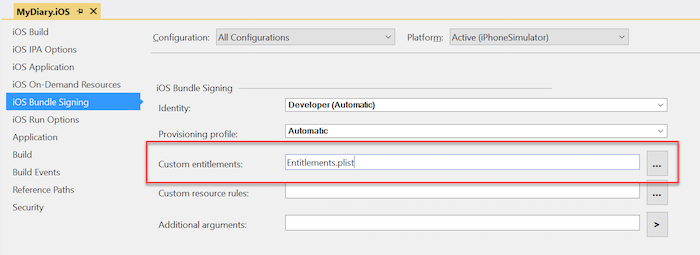
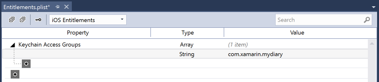
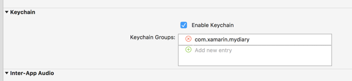

Duration
15 minutes
Goals
In this lab exercise, you will continue your modification of the MyDiary Xamarin.Forms application and support caching off the token in secure storage. We will use the SecureStorage component to securely hold the data using each platform's unique APIs.
Assets
There is a completed version of the exercise in the Exercise 2 folder.
Challenge
You can explore on your own to implement the functionality for your app, or use the step-by-step instructions below. Here are the high-level things we need to do in the app:
- Add the sameerIOTApps.Plugin.SecureStorage package to all the projects in our solution.
- Set a password in the Android and Windows platform-specific code which is used along with the native API to secure the data. Normally you would get this password from the user (e.g. a PIN), in this case, we'll retrieve some dynamic global data from the device:
- Android: set the static
SecureStorageImplementation.StoragePasswordproperty to theAndroid.OS.Build.Idstatic property. - Windows: set the static
WinSecureStorageBase.StoragePasswordproperty to thePackage.Current.Id.ToString()value.
- Android: set the static
- This library has four methods we will use in our
LoginAsyncmethod to save and restore the two properties in theMobileServiceUserobject: - If you are deploying to iOS, and using iOS 10 or beyond, you also need to add a custom entitlement to the application to enable KeyChain access since the plug-in relies on the native secure keychain.
| Method | Description |
|---|---|
CrossSecureStorage.Current.HasKey |
Return whether a given string based-key/value is stored in secure settings. |
CrossSecureStorage.Current.GetValue |
Retrieve a value from secure storage using a string-based key. |
CrossSecureStorage.Current.SetValue |
Set a value into secure storage associated with a string-based key. |
CrossSecureStorage.Current.DeleteKey |
Delete a key/value from secure storage. |
Steps
Add and initialize the sameerIOTApps.Plugin.SecureStorage library
We will use the cross-platform sameerIOTApps.Plugin.SecureStorage NuGet package to store our data.
- Add a reference to the sameerIOTApps.Plugin.SecureStorage NuGet package in all the platorm-specific projects. Note that if we'd used a PCL implementation for our shared code, we'd add a reference to that project as well.
- Open the MainActivity.cs source file in the Android project and in the
OnCreateoverride, add a call to set the SecureStorageImplementation.StoragePassword for the library. This should be done before you initialize Forms. - In the Windows project, open the App.xaml.cs source file and locate the
OnLaunchedoverride. Add a call to set theWinSecureStorageBase.StoragePasswordfield to a unique, static value. This should be done before the root frame is set.WinSecureStorageBase.StoragePassword = Package.Current.Id.ToString();
SecureStorageImplementation.StoragePassword = Build.Id;
Add support to cache and reload the MobileServiceClient
Now that we have a way to store our token securely, let's cache it off and reload it.
- Open the AzureDiaryService.cs source file in the shared code and locate your
LoginAsyncmethod we added earlier. - Create two unique string constants to use as keys for the userId and token.
-
Use the
CrossSecureStorage.Current.HasValuemethod to see if we have a userId and token stored before we do any login attempt. Remember to add ausingstatement for thePlugin.SecureStoragenamespace to get to this class. - If both values are present in our secure storage, retrieve them using the
CrossSecureStorage.Current.GetValuemethod and create a newMobileServiceUserobject. - Assign the new user object to the
azureClient.CurrentUserproperty and return from method since we have a current user. -
If we don't have any credentials stored off, execute the login code - add an
awaitcall so we properly wait for the async operation, and then store theazureClient.CurrentUservalues into the secure storage using your defined constant keys and theCrossSecureStorage.Current.SetValuemethod.
Add custom entitlement to allow KeyChain access (iOS Only)
iOS10 restricts access to the KeyChain API, to enable this, we need a custom Entitlements.plist entry - even to run it on the simulator.
- Open the MyDiary.iOS project properties by double-clicking on the Properties node under the project in the Solution Explorer in Visual Studio for Windows, or on the project node itself on VS for Mac.
- Set the configuration at the top of the property sheet to "All Configurations". In Visual Studio for Mac, you will need to set each configuration separately since it doesn't have an "All" option.
- Select the iOS Bundle Signing tab in the property sheet.
- Locate the Custom entitlements: field and either click the "..." button to locate the entitlements.plist file, or just type the filename directly into the field as shown below: 
- In Visual Studio for Mac, repeat the steps for each build configuration.
- Close the property sheet.
- Next, double click on the Entitlements.plist file in the MyDiary.iOS project to open it in the property list editor.
- In Visual Studio on Windows, locate the section for Keychain Access Groups, click the "+" button and type in the App ID "com.xamarin.mydiary" as shown below: 
- In Visual Studio for Mac, check the "Enable Keychain" checkbox under the Keychain section - this will add your App ID automatically - it should be "com.xamarin.mydiary". 
- Close the entitlements.plist file and rebuild the project.
Test the cached credentials
Now that the application caches off the token, try it out by running the application. The first time you run it, it should prompt you for your credentials. If you then stop the application and restart it, it should immediately load data and not ask for credentials!
Summary
In this exercise, you added support to the client application to cache off the user token to access Azure so we don't have to login each time. However, it has a significant issue; the token we are storing doesn't live forever. It's only valid for a short period of time before we have to get a new one. Next, we'll talk about how to refresh these tokens.